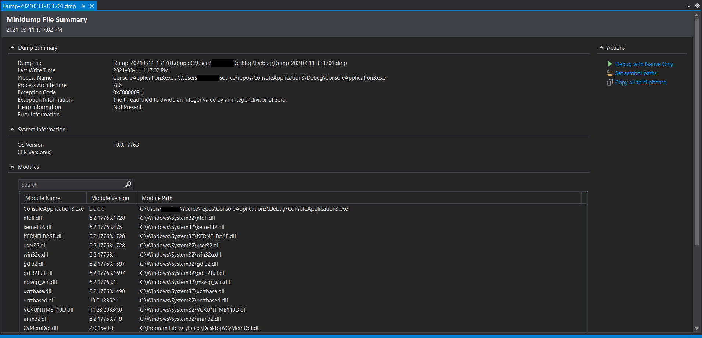

如何使用 Dump 文件？
引言
本文概述了使用 WinDbg 的一些必要步骤。
准备工作
第一步，你必须更改系统的配置使其能够生成 PDB 文件，包括 Release 版本。近期的 Visual C++ 编译器默认启用此配置，但早期某些版本编译器需要你手动开启此选项。保留每个版本的 PDB 文件，这很重要！
第二步，你必须确定生成 dump 文件的应用程序版本。当你自己生成了 MiniDumps（比如通过调用 MiniDumpWriteDump()）的时候，最好在 MiniDump 的文件名里加上应用程序的完整版本号。当然，这需要有一个完善的版本控制机制，比如任何分支的任何编译都会更新版本号。
现在假设你已经获取了 dump 文件，你准确地知道生成 dump 文件的应用程序版本，以及该版本的 PDB 文件。
第三步，在你的代码库历史记录中找到该版本的源代码，放在一个单独目录。
开始调试
现在你可以选择使用 WinDbg 或者 Visual C++ 来调试 dump 文件了。使用 Visual Studio 更加简单，但是 WinDbg 更加强大。大多数情况下 Visual Studio 的功能已经能够满足需求了。
如果使用 Visual Studio，你需要在 Visual Studio 中添加文件的方式打开 dump 文件:

然后 debug dump 文件。如果所有的路径（源代码和 PDB 文件）都配置正确，那么你就能够调试到 crash 的地方，查看 call stack 等内容。
如果使用 WinDbg，你需要：
- 打开 WinDbg 工具
- 打开 dump 文件（默认是 Ctrl + D）
- 告诉 WinDbg 加载正确的 MicroSoft symbol 文件，命令：
.symfix，这个过程可能需要一些时间 - 告诉 WinDbg 加载 程序的 PDB 文件，命令：
.sympath+ c:\pdblocation，将 “c:\pdblocation” 替换为你自己的 PDB 路径。注意.sympath和+之间不要有空格,否则可能会破坏步骤 3. 中的工作。 - 告诉 WinDbg 源代码的位置，命令：
.srcpath c:\app_build_1.0.100，将 “c:\app_build_1.0.100” 替换为你自己的源代码路径。 - 告诉 WinDbg 可以开始分析 dump 文件了，命令：
!analyze -v。
如果所有配置都是正确的，那么后面 WinDbg 就会运行到 crash 的位置，之后你就可以对应用程序进行深入分析，这部分内容不在本文讨论范围之内。
引用
Related Posts